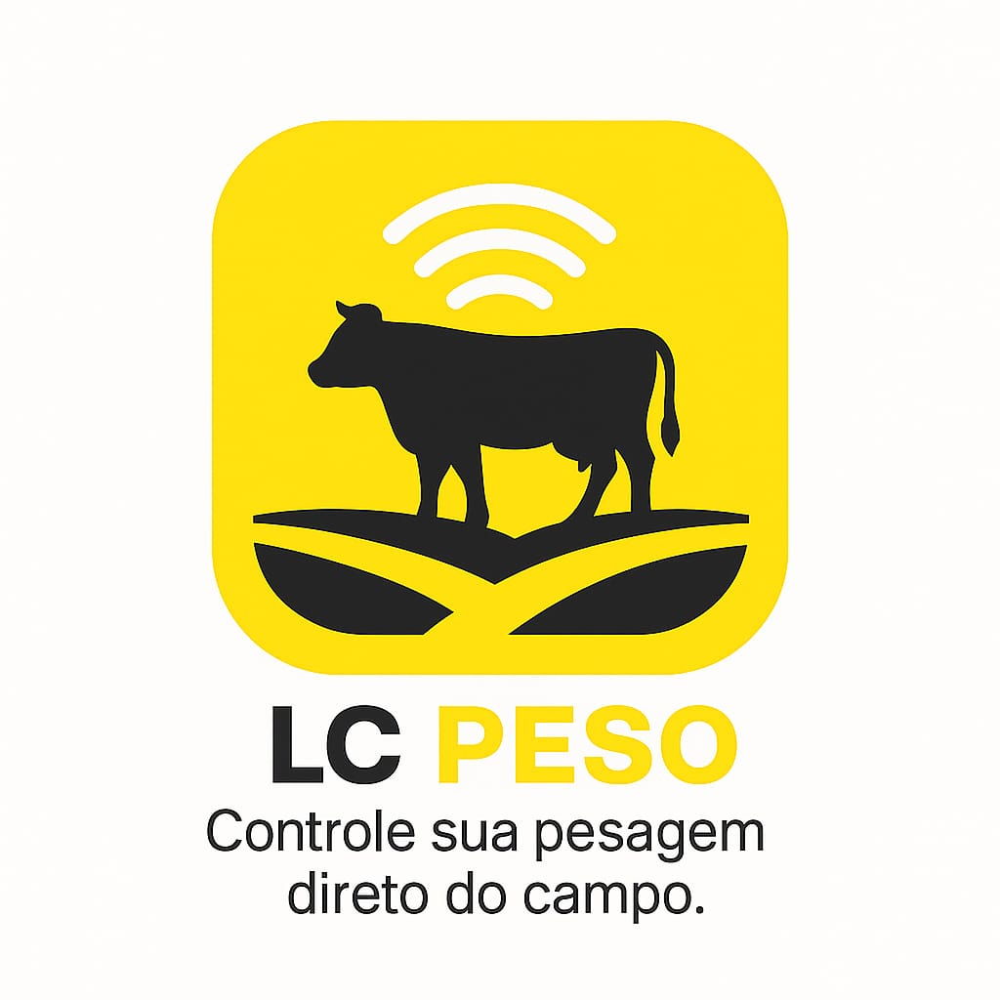
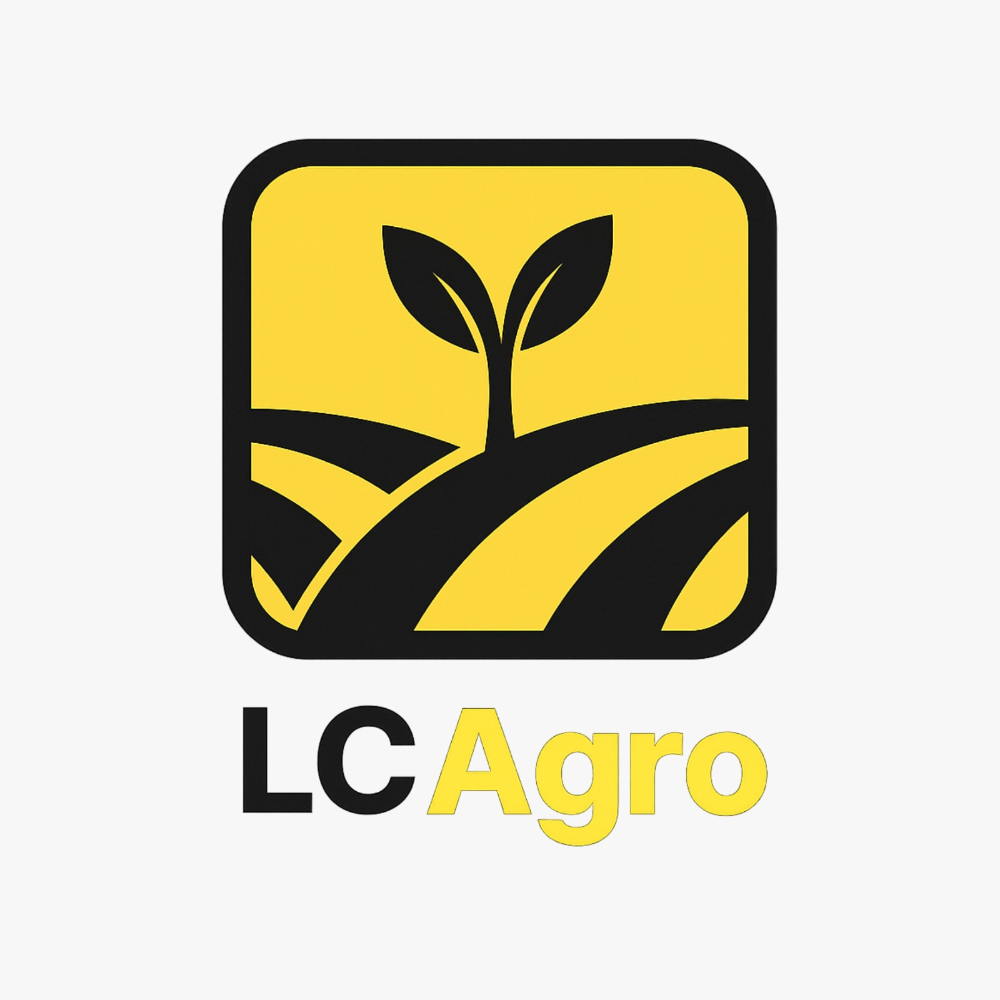
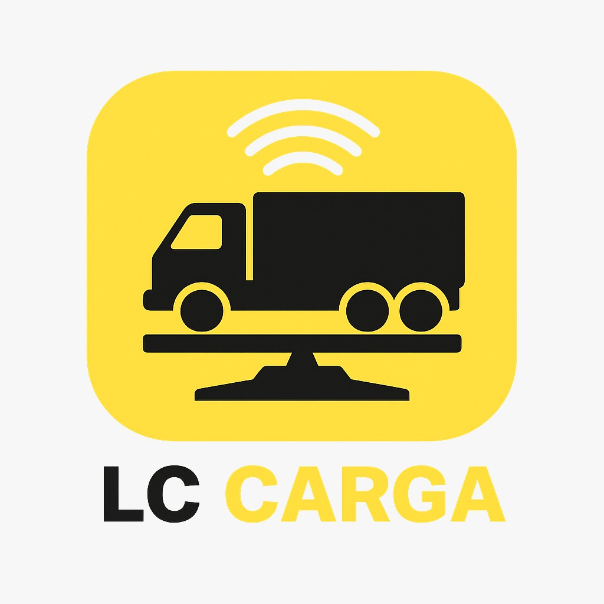
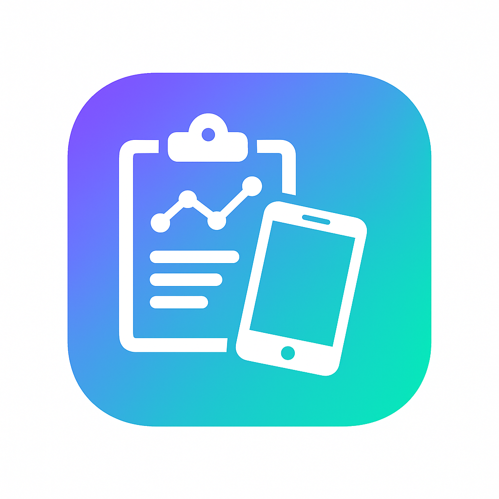
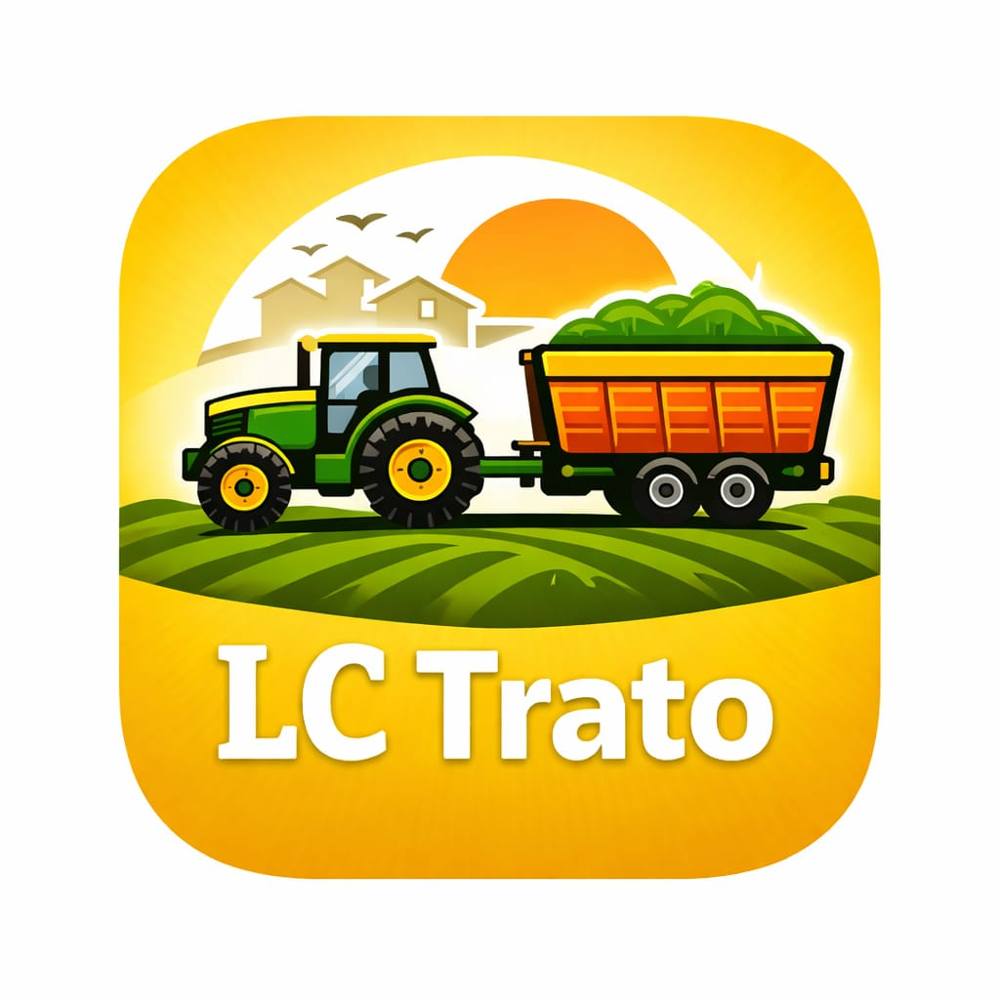

Portfólio analisado
Meus apps e programas em produção.
Projetos encontrados em /Users/alexjtsousa/Desktop/projetos, analisados por estrutura, nomes de telas e dependências.
Carregando apps...
Controle Financeiro
Aplicativo Flutter para controle financeiro com organização de dados locais, exportação/compartilhamento, geração de PDF e estrutura moderna com Riverpod, Hive e fontes personalizadas.
Ver downloadLicense Generator App
Gerador de licenças em Flutter com uso de criptografia. O código indica tela própria de geração, cópia de chave e interface dedicada para criar códigos de ativação.
Ver download
Pesagem BLELC Peso
Aplicativo para balança com conexão Bluetooth/BLE, calibração, histórico, desempenho, backup interno, impressão térmica e compartilhamento de dados.
Ver download
LC AgroLC Agro BLE e Clássico
Variação do LC Peso com identidade LC Agro, suporte a Bluetooth BLE e clássico, histórico exportável, relatórios, cadastro BIM, calibração e impressão.
Ver download
CargaLC Carga Atual
Aplicativo ScaleTech para gerenciamento de carga com login, cadastro de clientes, conexão Bluetooth, configuração de impressão, usuários por perfil, histórico e relatórios.
Ver downloadLC Peso com ECC OBS
Versão avançada do LC Peso com configuração administrativa, observações, relatórios detalhados, pré-visualização, impressão Bluetooth e tela de busca de impressora.
Ver download Trato animal
Trato animal
LC Trato
App Flutter com BLE para operações de carga e descarga, integração com ESP32, Firebase/Firestore, alertas sonoros, backup, compartilhamento e telas de controle operacional.
Ver download
Coleta e relatóriosColetador RBC
Aplicativo para coleta de dados com importação de clientes, geração de PDF, planilhas Excel/CSV, impressão Bluetooth térmica, imagens e compartilhamento.
Ver download Coleta
Coleta
Coleta Normal
Projeto Flutter dentro da pasta coletador, relacionado a coleta e documentação. A estrutura contém pubspec, README e um PDF, indicando uma versão base ou pacote separado do coletador.
Ver downloadLUMAK Tester
Aplicativo de teste para comunicação BLE/serial, calibração, leitura de balança, relatórios salvos e varredura automática de protocolo. Também há sketches Arduino na pasta.
Ver download
Módulo fonteBiblioteca LC Carga
Pasta com código Flutter solto contendo telas de carga, descarga, receitas, estoque, relatórios, login, usuários, Bluetooth e serviços de autenticação. Parece uma base reutilizável ou versão extraída de app maior.
Solicitar análiseColeta
A pasta foi encontrada, mas não havia arquivos visíveis na profundidade analisada. Pode ser reservada para uma versão futura, backup ou projeto ainda não iniciado.
Pedir suporte